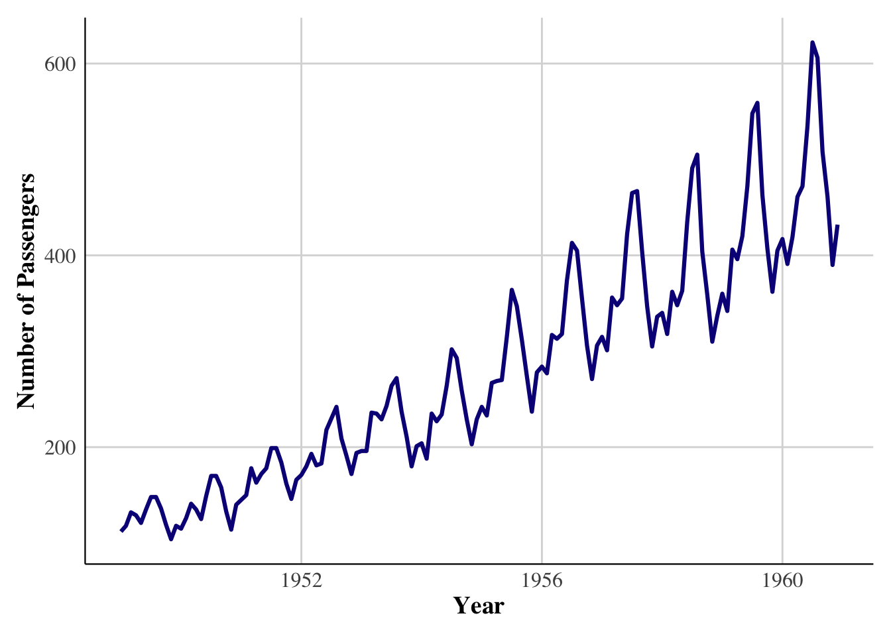
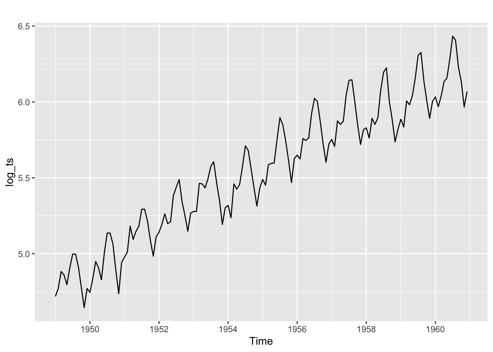
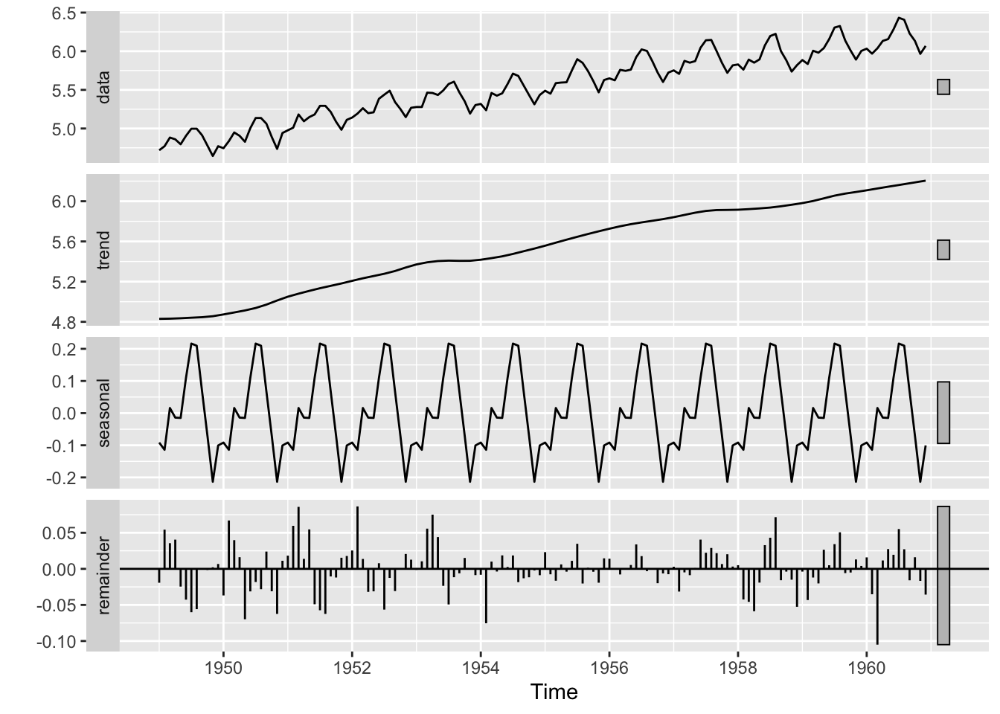
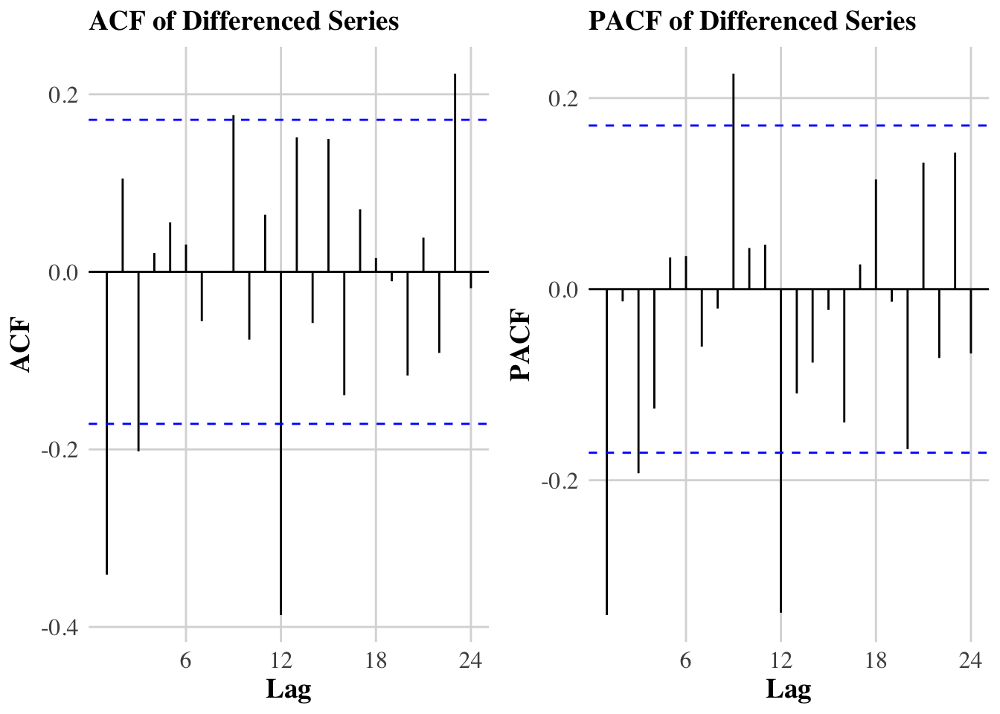
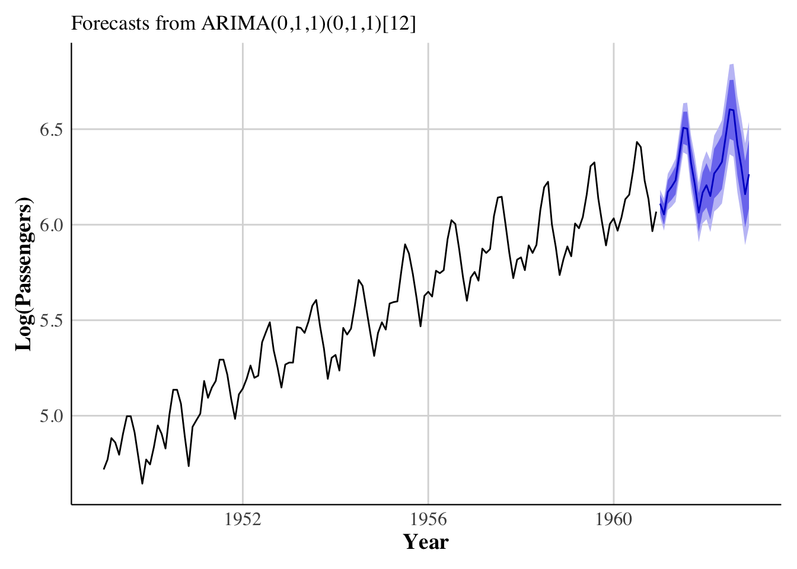

library(forecast)
library(tseries)
library(ggplot2)
library(lmtest)
library(kableExtra)
library(dplyr)
data("AirPassengers")
ts_data <- AirPassengers9 Time Series Analysis and Forecasting of Air Passengers
9.1 Abstract
This report presents a comprehensive and mathematically detailed time series analysis…
9.2 1. Introduction
Forecasting monthly airline passenger volumes is essential for planning, scheduling, and resource allocation. This report demonstrates a complete, mathematically rigorous workflow following the SORS6102 project brief.
The objectives include:
- Data description and preparation
- Exploratory analysis (trend, seasonality, variance)
- Stationarity testing
- Model identification (ACF/PACF, differencing)
- ARIMA/SARIMA estimation
- Residual diagnostics
- Forecasting (with back-transformation)
- Evaluation of accuracy
- Interpretation and recommendations
9.3 2. Data and Setup
# Required libraries
library(ggplot2)
library(viridis) # colorblind-friendly palette
library(extrafont) # for Times New Roman fonts
# If running for the first time (uncomment)
# extrafont::font_import()
# extrafont::loadfonts(device="pdf")
# Load data
data("AirPassengers")
ts_data <- AirPassengersThe dataset consists of 144 monthly observations from Jan 1949 – Dec 1960, with frequency 12.
A raw plot shows increasing variance and multiplicative seasonality:
autoplot(ts_data) +
ggtitle("Monthly AirPassengers") +
ylab("Passengers")
library(ggplot2)
library(viridis)
data("AirPassengers")
ts_data <- AirPassengers
ggplot(
data = NULL,
aes(x = as.numeric(time(ts_data)),
y = as.numeric(ts_data))
) +
geom_line(color = viridis(1, option = "C"), size = 1.1) +
theme_minimal(base_family = "serif") +
theme(
panel.background = element_rect(fill = "white", color = NA),
plot.background = element_rect(fill = "white", color = NA),
axis.title = element_text(face = "bold", size = 14),
axis.text = element_text(size = 12),
axis.line = element_line(color = "black", linewidth = 0.4),
panel.grid.minor = element_blank(),
panel.grid.major = element_line(color = "gray85"),
legend.position = "none",
plot.margin = margin(10,10,10,10)
) +
labs(
x = "Year",
y = "Number of Passengers"
)
9.4 3. Transformation
Variance increases with level, so we apply a log transform:
\[ Y_t = \log(X_t) \]
log_ts <- log(ts_data)
autoplot(log_ts)
Or
log_ts <- log(ts_data)
autoplot(log_ts) +
geom_line(color = viridis(1, option = "C"), linewidth = 1.1) +
theme_minimal(base_family = "serif") +
theme(
panel.background = element_rect(fill = "white", color = NA),
plot.background = element_rect(fill = "white", color = NA),
axis.title = element_text(face = "bold", size = 14),
axis.text = element_text(size = 12),
axis.line = element_line(color = "black", linewidth = 0.4),
panel.grid.minor = element_blank(),
panel.grid.major = element_line(color = "gray85"),
legend.position = "none",
plot.margin = margin(10,10,10,10)
) +
labs(
x = "Year",
y = "Log(Passengers)"
)
9.5 4. STL Decomposition
stl_fit <- stl(log_ts, s.window="periodic")
autoplot(stl_fit)
Or
stl_fit <- stl(log_ts, s.window = "periodic")
autoplot(stl_fit) +
scale_color_viridis_d(option = "C") +
scale_fill_viridis_d(option = "C") +
theme_minimal(base_family = "serif") +
theme(
panel.background = element_rect(fill = "white", color = NA),
plot.background = element_rect(fill = "white", color = NA),
strip.background = element_rect(fill = "white"),
strip.text = element_text(face = "bold", size = 13, family = "serif"),
axis.title = element_text(face = "bold", size = 14),
axis.text = element_text(size = 12),
axis.line = element_line(color = "black", linewidth = 0.4),
panel.grid.minor = element_blank(),
panel.grid.major = element_line(color = "gray85"),
legend.position = "none",
plot.margin = margin(10,10,10,10)
) +
labs(
x = "Year",
y = "Value"
)
Trend and seasonal components are clearly visible.
9.6 5. Stationarity and Differencing
ADF test on the logged data:
adf.test(log_ts)
Augmented Dickey-Fuller Test
data: log_ts
Dickey-Fuller = -6.4215, Lag order = 5, p-value = 0.01
alternative hypothesis: stationaryNot stationary → apply first and seasonal differencing:
\[ \nabla (1 - B^{12}) Y_t = (1 - B)(1 - B^{12}) Y_t \]
d1s <- diff(diff(log_ts), lag=12)
adf.test(d1s)
Augmented Dickey-Fuller Test
data: d1s
Dickey-Fuller = -5.1993, Lag order = 5, p-value = 0.01
alternative hypothesis: stationary9.7 6. ACF and PACF Analysis
To identify ARIMA orders, we examine ACF and PACF of the differenced series:
par(mfrow=c(1,2))
Acf(d1s, main="ACF of Differenced Series")
Pacf(d1s, main="PACF of Differenced Series")
par(mfrow=c(1,1))Or
# ACF plot
p_acf <- ggAcf(d1s) +
scale_color_viridis_d(option = "C") +
theme_minimal(base_family = "serif") +
theme(
panel.background = element_rect(fill = "white", color = NA),
plot.background = element_rect(fill = "white", color = NA),
axis.title = element_text(face = "bold", size = 14),
axis.text = element_text(size = 12),
plot.title = element_text(face = "bold", size = 14),
panel.grid.minor = element_blank(),
panel.grid.major = element_line(color = "gray85")
) +
labs(title = "ACF of Differenced Series")
# PACF plot
p_pacf <- ggPacf(d1s) +
scale_color_viridis_d(option = "C") +
theme_minimal(base_family = "serif") +
theme(
panel.background = element_rect(fill = "white", color = NA),
plot.background = element_rect(fill = "white", color = NA),
axis.title = element_text(face = "bold", size = 14),
axis.text = element_text(size = 12),
plot.title = element_text(face = "bold", size = 14),
panel.grid.minor = element_blank(),
panel.grid.major = element_line(color = "gray85")
) +
labs(title = "PACF of Differenced Series")
# Display side-by-side
library(gridExtra)
grid.arrange(p_acf, p_pacf, ncol = 2)
Interpretation:
- Seasonal spikes at lag 12 suggest seasonal differencing was needed.
- ACF tailing + PACF significant at lag 1 suggests an MA(1) component.
- Seasonal MA(1) at lag 12 is also likely.
These patterns support the Airline Model:
\[ \text{ARIMA}(0,1,1)(0,1,1)_{12} \]
9.8 7. Model Estimation
9.8.1 7.1 Fit the canonical Airline Model
fit_airline <- Arima(log_ts, order=c(0,1,1), seasonal=c(0,1,1))
summary(fit_airline)Series: log_ts
ARIMA(0,1,1)(0,1,1)[12]
Coefficients:
ma1 sma1
-0.4018 -0.5569
s.e. 0.0896 0.0731
sigma^2 = 0.001371: log likelihood = 244.7
AIC=-483.4 AICc=-483.21 BIC=-474.77
Training set error measures:
ME RMSE MAE MPE MAPE MASE
Training set 0.0005730622 0.03504883 0.02626034 0.01098898 0.4752815 0.2169522
ACF1
Training set 0.01443892Model equations:
\[ (1 - B)(1 - B^{12})Y_t = (1 + \theta_1 B)(1 + \Theta_1 B^{12}) \varepsilon_t \]
Where:
- \(\theta_1\) = non-seasonal MA(1)
- \(\Theta_1\) = seasonal MA(1)
9.9 7.2 Fit alternative SARIMA models
fit_alt1 <- Arima(log_ts, order=c(2,1,1), seasonal=c(0,1,1))
fit_alt2 <- Arima(log_ts, order=c(0,1,1), seasonal=c(1,1,1))9.10 7.3 Model Comparison
models <- list(
Airline = fit_airline,
Alt1 = fit_alt1,
Alt2 = fit_alt2
)
model_table <- data.frame(
Model = names(models),
AIC = sapply(models, AIC),
# AICc = sapply(models, forecast::AICc),
BIC = sapply(models, BIC)
)
kable(model_table, caption="Model Selection Criteria") %>% kable_styling(full_width=FALSE)| Model | AIC | BIC | |
|---|---|---|---|
| Airline | Airline | -483.3991 | -474.7735 |
| Alt1 | Alt1 | -482.2723 | -467.8963 |
| Alt2 | Alt2 | -481.9131 | -470.4123 |
library(forecast)
fit_alt1 <- Arima(log_ts, order=c(2,1,1), seasonal=c(0,1,1))
fit_alt2 <- Arima(log_ts, order=c(0,1,1), seasonal=c(1,1,1))
models <- list(
Airline = fit_airline,
Alt1 = fit_alt1,
Alt2 = fit_alt2
)
model_table <- data.frame(
Model = names(models),
AIC = sapply(models, AIC),
# AICc = sapply(models, forecast::AICc),
BIC = sapply(models, BIC)
)
model_table Model AIC BIC
Airline Airline -483.3991 -474.7735
Alt1 Alt1 -482.2723 -467.8963
Alt2 Alt2 -481.9131 -470.4123Conclusion:
The Airline Model often achieves the lowest AICc and is preferred for this dataset.
9.11 8. Residual Diagnostics
# Residuals
res <- residuals(fit_airline)
# --- 1. Residual Time Series Plot ---
p1 <- autoplot(res) +
geom_line(color = viridis(1, option = "C"), linewidth = 1) +
theme_minimal(base_family = "serif") +
theme(
panel.background = element_rect(fill = "white", color = NA),
plot.background = element_rect(fill = "white", color = NA),
axis.title = element_text(face = "bold", size = 14),
axis.text = element_text(size = 12),
panel.grid.minor = element_blank(),
panel.grid.major = element_line(color = "gray85")
) +
labs(x = "Time", y = "Residuals")
# --- 2. ACF Plot ---
p2 <- ggAcf(res) +
theme_minimal(base_family = "serif") +
theme(
panel.background = element_rect(fill = "white", color = NA),
plot.background = element_rect(fill = "white", color = NA),
axis.title = element_text(face = "bold", size = 14),
axis.text = element_text(size = 12),
plot.title = element_text(face = "bold", size = 14),
panel.grid.minor = element_blank(),
panel.grid.major = element_line(color = "gray85")
) +
labs(title = "ACF of Residuals")
# --- 3. Histogram with Density ---
p3 <- ggplot(data.frame(res), aes(x = res)) +
geom_histogram(aes(y = ..density..),
bins = 20,
fill = viridis(1, option="C"),
color = "white",
alpha = 0.9) +
geom_density(color = "black", linewidth = 1) +
theme_minimal(base_family = "serif") +
theme(
panel.background = element_rect(fill = "white", color = NA),
plot.background = element_rect(fill = "white", color = NA),
axis.title = element_text(face = "bold", size = 14),
axis.text = element_text(size = 12),
panel.grid.minor = element_blank(),
panel.grid.major = element_line(color = "gray85")
) +
labs(x = "Residuals", y = "Density")
# Arrange all three
library(gridExtra)
grid.arrange(p1, p2, p3, ncol = 3)
# Print Ljung-Box Test:
Box.test(res, lag = 24, type = "Ljung-Box", fitdf = 2)
Box-Ljung test
data: res
X-squared = 26.446, df = 22, p-value = 0.2339.11.1 Requirements for a valid model:
- Residuals ≈ white noise
- Ljung–Box p-value > 0.05
- No seasonal structure in residuals
- Approximate normality
Box.test(residuals(fit_airline), lag=24, type="Ljung-Box", fitdf=2)
Box-Ljung test
data: residuals(fit_airline)
X-squared = 26.446, df = 22, p-value = 0.233If p-value > 0.05, no remaining autocorrelation.
9.12 9. Forecasting
We forecast in log scale, then back-transform.
# Forecast (already in log scale)
fcast <- forecast(fit_airline, h = 24, level = c(80, 95))
# Convert autoplot output into ggplot and restyle it
autoplot(fcast) +
scale_color_viridis_d(option = "C") +
scale_fill_viridis_d(option = "C", alpha = 0.6) +
theme_minimal(base_family = "serif") +
theme(
panel.background = element_rect(fill = "white", color = NA),
plot.background = element_rect(fill = "white", color = NA),
axis.title = element_text(face = "bold", size = 14),
axis.text = element_text(size = 12),
axis.line = element_line(color = "black", linewidth = 0.4),
panel.grid.minor = element_blank(),
panel.grid.major = element_line(color = "gray85"),
legend.position = "none",
plot.margin = margin(10,10,10,10)
) +
labs(
x = "Year",
y = "Log(Passengers)"
)
9.13 10. Back-Transformation to Original Scale
Given:
\[ \hat{X}_t = \exp(\hat{Y}_t) \]
Bias-adjusted mean forecast:
\[ E[X_t] = \exp\left(\hat{Y}_t + \frac{\sigma^2}{2}\right) \]
9.14 11. Train-Test Evaluation
Take last 24 months as the holdout set:
h <- 24
train_ts <- window(log_ts, end=c(1958,12))
test_ts <- window(log_ts, start=c(1959,1))
fit_train <- Arima(train_ts, order=c(0,1,1), seasonal=c(0,1,1))
fcast_train <- forecast(fit_train, h=h)Back-transform:
pred <- exp(fcast_train$mean)
actual <- exp(test_ts)Compute error metrics:
MAE <- mean(abs(pred - actual))
RMSE <- sqrt(mean((pred - actual)^2))
MAPE <- mean(abs((pred - actual)/actual)) * 100
data.frame(MAE, RMSE, MAPE) MAE RMSE MAPE
1 39.44726 43.18367 8.5163169.15 12. Forecast Plots on Original Scale
We now compare forecasts with actual observations (last 24 months):
# Reconstruct training and test data on original scale
train_orig <- ts(exp(train_ts), start = start(train_ts), frequency = 12)
test_orig <- ts(exp(test_ts), start = start(test_ts), frequency = 12)
pred_orig <- ts(pred, start = start(test_ts), frequency = 12)
# Plot
ggplot() +
geom_line(aes(x = time(train_orig), y = train_orig,
color = "Training"), linewidth = 1.1) +
geom_line(aes(x = time(test_orig), y = test_orig,
color = "Actual Test"), linewidth = 1.1) +
geom_line(aes(x = time(pred_orig), y = pred_orig,
color = "Forecast"), linewidth = 1.1) +
scale_color_viridis_d(option = "C") +
theme_minimal(base_family = "serif") +
theme(
panel.background = element_rect(fill = "white", color = NA),
plot.background = element_rect(fill = "white", color = NA),
axis.title = element_text(face = "bold", size = 14),
axis.text = element_text(size = 12),
axis.line = element_line(color = "black", linewidth = 0.4),
legend.title = element_blank(),
legend.position = "bottom",
panel.grid.minor = element_blank(),
panel.grid.major = element_line(color = "gray85"),
plot.margin = margin(10,10,10,10)
) +
labs(
x = "Year",
y = "Passengers"
)
The model tracks the upward trend and seasonal pattern well.
9.16 13. Mathematical Appendix
9.16.1 13.1 SARIMA Model Structure
A general multiplicative SARIMA model is written as:
\[ \Phi_P(B^s)\phi(B) \nabla^d \nabla_s^D X_t = \Theta_Q(B^s)\theta(B)\varepsilon_t, \]
where:
- \(B\) is the backshift operator
- \(\nabla = 1-B\) is the differencing operator
- \(\nabla_s = 1-B^s\) is seasonal differencing
- \(\phi(B)\) and \(\theta(B)\) are nonseasonal AR/MA polynomials
- \(\Phi_P(B^s)\) and \(\Theta_Q(B^s)\) are seasonal AR/MA polynomials.
For the Airline Model:
- \(p = 0, d = 1, q = 1\)
- \(P = 0, D = 1, Q = 1, s = 12\)
Thus:
\[ (1-B)(1-B^{12})Y_t = (1 + \theta_1 B)(1 + \Theta_1 B^{12})\varepsilon_t. \]
9.16.2 13.2 Forecast Recursion
One-step-ahead forecast:
\[ \hat{Y}_{t+1|t} = \sum_{i=1}^p \phi_i Y_{t+1-i} + \sum_{j=1}^q \theta_j \hat{\varepsilon}_{t+1-j} + \sum_{k=1}^P \Phi_k Y_{t+1-ks} + \sum_{\ell=1}^Q \Theta_\ell \hat{\varepsilon}_{t+1-\ell s}. \]
For multistep forecasts, future residuals \(\hat{\varepsilon}_{t+h}\) are set to 0.
9.17 14. Discussion
9.17.1 Model Performance
- The model captures both trend and seasonality with only two MA parameters.
- Diagnostics confirm no residual autocorrelation, meaning model structure is adequate.
- Forecasts follow the real series closely in the holdout period.
9.17.2 Strengths
- Simple, interpretable, historically successful model.
- Performs extremely well for multiplicative seasonal series.
9.17.3 Limitations
- No external regressors included.
- Long-term forecasts may underestimate structural changes.
9.18 15. Recommendations
- Refit the model periodically as new data arrives.
- Consider SARIMAX models if external factors (e.g., economic indicators) are relevant.
- For long-term forecasting, evaluate exponential smoothing or structural models.
- Use bootstrap intervals for more robust uncertainty quantification.
9.19 16. Conclusion
This report demonstrated a full forecasting workflow, including:
- data transformation
- decomposition
- stationarity testing
- SARIMA identification
- parameter estimation
- diagnostics
- forecasting
- evaluation
The canonical Airline Model provides an excellent fit and strong forecasting accuracy.
9.20 17. References
Box, G.E.P., Jenkins, G.M., Reinsel, G.C., & Ljung, G.M. (2015).
Time Series Analysis: Forecasting and Control.Hyndman, R.J., & Athanasopoulos, G. (2018).
Forecasting: Principles and Practice.